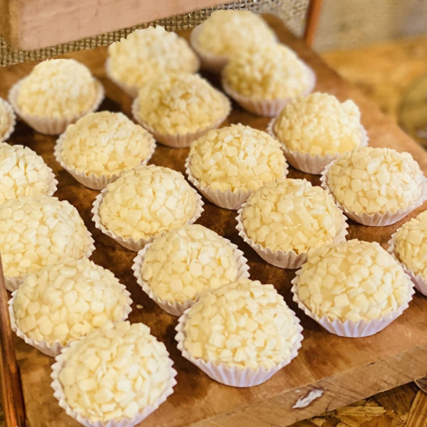

Branquinho
Otima escolha, branquinho é uma delicia mesmo. Agora vamos cozinhar!
Você vai precisar de:
- 1 lata de leite condensado.
- 1 pacote de coco ralado.
- 1 colher sopa de margarina.
Modo de preparo:
- Misture em uma panela o leite condensado, a margarina e 5 colheres sopa de coco ralado.
- Cozinhe em fogo baixo por 15 minutos até que o doce desgrude da panela.
- Despeje o restante do coco ralado em um recipiente.
- Unte as mãos com margarina, enrole os branquinhos e passe-os no coco ralado.
